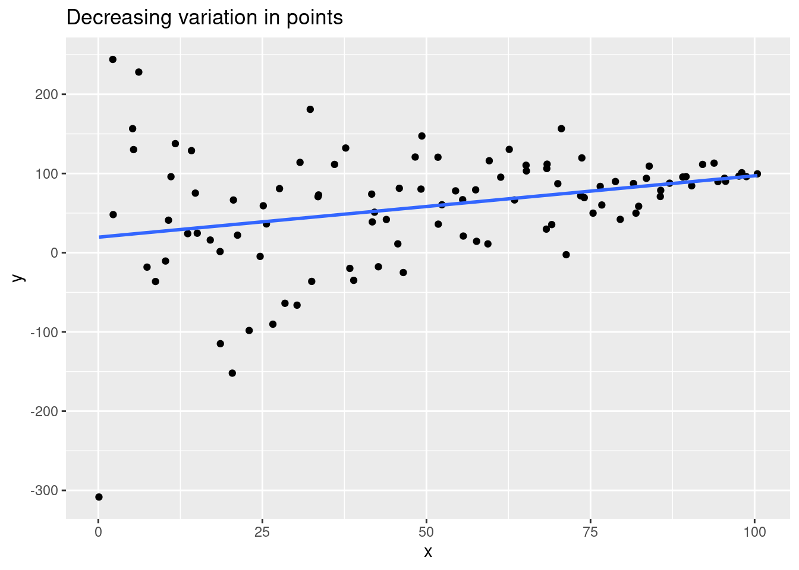

10 Modeling
10.1 What is a model
This video will introduce you to the concept of models, and in particular the linear model (which you may already be familiar with as a line of best fit).
Slides: PDF
The real world is complicated. There are many moving pieces, all interacting with each other.
As scientists, we want to understand these interactions. We want to be able to describe the real world as a theory.
Unfortunately the real world is so complicated that we cannot possibly comprehend all of the interactions at once. Therefore our theoretical description of the world has to be a simplified version. We call these simplified theories “models”.
Often (as scientists) we would like our models to be mathematical, because we want to know exactly how much two things are related to each other.
One common type of mathematical model is called the linear model. You have probably encountered this before, although possibly under a different name, such as linear regression or a line of best fit.
What a linear model means is that if we have two variables,1 then we can simplify their relationship to a straight line:
This linear model’s line is simpler that the original dataset of 10 data points, because we can represent it with just two numbers: the slope and the intercept.
In other words, we can model the relationship between the variable on the \(y\) axis and the variable on the \(x\) axis as a mathematical relationship:
\[ y = ax + b \] where \(a\) is the slope of the line (\(a\) increases as the slope gets steeper) and \(b\) is the value at which the line intercepts the \(y\)-axis.
We can represent any two dimensional straight line with just these two numbers \(a\) and \(b\). You could have millions of data points instead of just 10, but the linear model representation will still only need two numbers.
We call this relationship linear because as \(x\) goes up by 1, the \(y\) value of the line always goes up by \(a\) (the slope). In other words, the slope tells us how much the y value changes as the x value increases by 1. Since the line is linear, it’s \(y\) will always increase by the same amount (\(a\)) regardless or whether \(x\) increases from \(0\) to \(1\) or from \(99\) to \(100\).
If \(x\) goes up by 2, then \(y\) goes up by \(2a\). It doesn’t matter how much we change \(x\), \(y\) will change by a constantly proportional amount.
Now, we will lose some information if we simplify our data down to a linear model. As we can see from graphs above, the points do not fall exactly on the line, but some distance from it. So there are clearly other things going on in the world which we have not measured that affect the \(y\) and \(x\) variables.
10.2 Describing linear relationships
10.2.0.1 Linear versus non-linear
The opposite of a linear relationship is a non-linear relationship, which you can see in the underlying data on the right in this figure. Non-linear basically means “there’s a curve” in the data.
Mathematically, there is nothing that stops us we can still create a linear model for non-linear data! Unfortunately, it doesn’t do a very good job of capturing the underlying relationship between \(x\) and \(y\). It’s on you, the human operating the machine, to make sure that you only use a linear model if there is actually a linear relationship in the data. Later in this chapter, we will see how we can assess whether this is the case for any dataset.
10.2.0.2 Correlation
Consider these two different sets of data:
There is a linear relationship in both of these plots! In both cases, the y values seem to increase by a constant amount (on average) as the x values increase by a constant amount.
The difference is that the points in the left hand plot are much more closely clustered around the line than on the right. More formally we would say that the left hand y is strongly correlated with x, whereas in the right hand side graph there is a weak correlation.
When you are new to linear relationships, it can be easy to mistake a weak correlation for a non-linear relationship. The best way to be sure is to ask yourself:
Is there an obvious curved trend to the underlying data?
This is the same as asking is there a non-linear relationship? If the answer is no, then, by a process of elimination, there is either a linear relationship (or no correlation at all, as we will see in the next section).
10.2.0.3 Positive, negative, or no correlation?
10.2.0.4 Other linear model terminology
When we create a simple linear model (e.g. a line of best fit) like the ones above, we have 2 variables:
- The variable on the \(y\)-axis, which we call the response variable.
- The \(x-axis\) variable, the explanatory variable
These names (“response” and “explanatory”) seem to imply that the values of \(x\) explain the values of \(y\), or conversely that the \(y\) variable responds to changes in \(x\). In other words, we seem to be saying that a change in \(x\) is directly causing the change in \(y\), and not the other way around.
However…
10.2.1 “Correlation does not imply causation”
A common saying when working with models is that “correlation does not imply causation”. What does this mean?
The linear model cannot actually tell us which variable is causing changes in the other (causation). Just because we decide to call one variable the “response” and the other “explanatory”, does not mean that is necessarily the direction of effect in the real world.
For example, taller people generally weigh more, but there is nothing stopping us from creating a linear model in which height is the response variable (y), even though most people would say that it makes no sense to say that your weight causes your height.
Since we have picked which variable is the “response” before creating the linear model, it would be circular for us to then claim that the linear model shows that the explanatory variable is causing the response. Of course it seems to be showing that, because we told it to show it! The linear model (which is fundamentally a fairly simple mathematical formula) has no way of detecting the true causal relationships that exist in the real world.
To summarize in more general terms: even if there seems to be a linear relationship between two variables, we cannot definitively say that one causes the change in the other - only that they are correlated.
Even when we have a correlation, it’s possible that neither of the variables in your model is directly causing a change in the other. There might be other variables (that are not in our model) that actually cause the change in both of the modeled variables. To return to our height vs. weight example: the variation in both height and weight might be caused by diet (or genetics), yet we have not included diet (or genetics) as a variable in our model. Imagine a world in which better2 diet causes all of the variation in people’s height and weight. A linear model of height and weight would show a strong correlation - however (in this contrived example) neither is causing the changes in the other since both are ultimately being determined by another factor which we have not analyzed.
3: Or, at least, more calorific…
10.3 Creating models in R
Slides: PDF (same as before)
10.3.1 Let’s create a linear model
Slides: PDF (same as before)
Let’s create your first linear model in R, using a simulated4 dataset called sim_df.
This is what the first few rows of the simulated dataset stored in the sim_df variable look like:
| x | y |
|---|---|
| 8.551703 | 17.739356 |
| 8.930282 | 17.576311 |
| -2.135628 | -6.927711 |
| 7.117610 | 11.794752 |
| 3.909674 | 9.139461 |
| 1.824631 | 3.342624 |
As you can see, there are two variables, \(x\) and \(y\). Here’s what they look like:
sim_df %>%
ggplot() +
geom_point(aes(x,y))This looks like a pretty good candidate for a linear model, so let’s create one.
We’ll do that with the lm() function. The general syntax of this function is:
lm(response ~ explanatory, data = _______)responseandexplanatoryare the column names of those two variables.- The
dataparameter expects the dataframe containing those columns.
Exercise: In the linear model formula \(y = ax + b\),
- The slope is represented by
Note: Unfortunately the lm() function is a part of the core R programming language that predates the tidyverse packages. Unlike the tidyverse functions, the first argument of lm() is the formula, not the data frame. Therefore, you cannot pipe a data frame to lm(), because pipe inserts the data frame into the first argument position (which will cause an error).
10.3.2 Your model’s coefficients
We usually want to report the slope and intercept of a linear model. The slope is especially useful to report, because it indicates how much \(y\) changes as \(x\) changes.
- If we have a slope of 1, then this means that as \(x\) increases, \(y\) increases by the same amount (i.e. a ratio of 1).
- If we have a slope of 3, then as \(x\) increases, \(y\) increases by three times that value (e.g. if \(x\) increases by 10, \(y\) increases by \(3 \times 10 = 30\)).
- A slope of \(0\) means that \(x\) and \(y\) are uncorrelated, i.e. as \(x\) increases, the value of \(y\) is not affected (on average). (We can still have variation in the \(y\) variable - it’s just that such variation seems to be entirely unconnected to changes in the \(x\) variable).
The intercept is the point at which the line of our linear model intersects the \(y\)-axis. This is the value of the response variable when the explanatory variable is 0.
We can report the model’s coefficients with the tidy() function from the broom package. The syntax is like this:
tidy(your_model)or equivalently
your_model %>%
tidy()if you prefer to pipe the linear model in (the your_model variable above refers to the output of the lm() function).
For example, here is the table of coefficients for the model we were trying to create in the previous section:
sim_model <- lm(y ~ x, data = sim_df)
sim_model %>%
tidy()# A tibble: 2 × 5
term estimate std.error statistic p.value
<chr> <dbl> <dbl> <dbl> <dbl>
1 (Intercept) -0.0750 0.345 -0.217 8.29e- 1
2 x 1.95 0.0577 33.7 3.22e-24The important column here (for our current purposes) is the estimate column. This tells us that the lm() function estimates the intercept to be -0.0749858 and the slope to be 1.9468815.
Note that although the intercept row is called (Intercept), the slope row is named after the explanatory variable, x. As we shall see in the next section, we can have more than one explanatory variable in a single model, and this helps us keep track of the slope associated with each one.
10.3.3 Categorical explanatory variables
10.3.4 More than one explanatory variable
10.3.5 Multiple explanatory variables
In our previous module on linear models, we considered what is called simple linear regression: a linear model with just one explanatory variable, \(x\):
\(y = m \times x + c\)
which we created using the lm function.
However, we can technically have as many explanatory variables in our model as we like! (But we can only ever have a single response variable, \(y\)) For example, this model has two explanatory variables, called \(x_1\) and \(x_2\) (we use the subscripts 1 and 2 to tell them apart):
\(y = m_1 \times x_1 + m_2 \times x_2 + c\)
Note:
- Each explanatory variable gets its own coefficient (\(m_1\) and \(m_2\)) - note how the number mathces the number of the explanatory variable. If we added another explanatory variable, we would call it \(x_3\) and it would have a coefficient \(m_3\), and so on. (In theory, there is no limit on the number of explanatory variables we can include in a single linear model.)
- There is still just a single intercept, \(c\). It doesn’t matter how many explanatory variables we add, we can only have one intercept (because we will only have one y-axis, which the model will only cross at one place).
10.3.6 But what does that look like?
We can pretty easily plot \(y\) vs a single explanatory variable \(x\). In this case, a linear model is just a best-fit line through the data:
`geom_smooth()` using formula = 'y ~ x'
But what does a linear model look like in higher dimensions?
As you can see, in three dimensions we have a plane of best fit rather than a line (note: you should be able to click-and-drag to rotate the 3D graph).
But what about if we have 3 explanatory variables? Then our model would exist in 4-D space! I don’t know if you’ve ever tried to imagine what things look like in four dimensions, but it’s kind of impossible. And, of course, the more explanatory variables we add, the more dimensions this “space” has. However, it turns out that in this high dimensional “hyperspace”, the linear model is still the equivalent of a flat surface which we would call a “hyperplane”.
The fact that we can’t visualize these high dimensional spaces (even the 3-D graph above is hard to understand) means that we need some way of plotting them in just 2 dimensions. We want to plot our model because its the easiest way of telling whether the model is an appropriate summary of the data. For example, we don’t want to plot a linear model if there is a non-linear relationship (i.e. if the data has a curved pattern).
10.3.7 lm() with multiple explanatory variables
Recall that the first argument of the lm function was a formula. We create an R formula by:
- removing the constant coefficients
- replacing the \(=\) sign with
~(~ means “is related to”)
For example,
\(y = m x + c\)
becomes
y ~ x
The same principle applies to multiple explanatory variables:
\(y = m_1 x_1 + m_2 x_2 + c\)
becomes
y ~ x1 + x2
10.3.8 Create a multiple regression model
Let’s create a linear model from the diamonds dataset.
The diamonds dataset is included as part of the ggplot2 package and contains observations about the properties of thousands of diamonds. We are going to use three variables from the dataset:
- the
pricevariable will be our response variable (i.e. y) - the
caratanddepthvariables will be our explanatory variables
10.3.9 \(R^2\): how good is your model?
So we’ve reported the slope and intercept: however, these don’t tell us about how well the model fits the data, i.e. how close the points are to the model’s line.
For example, you could have a steep slope (suggesting that a change in \(x\) is correlated with a big change in \(y\)), but the points could be scattered a long way from the line (i.e. large residuals). For example, consider these two graphs:
set.seed(42)
x1 <- 1:10 + rnorm(10, 0, 0.5)
x2 <- 1:10 + rnorm(10, 0, 0.5)
x <- c(x1, x2)
y <- c(x1 + rnorm(10, 0, 3), 2*x2 + rnorm(10, 0, 0.5))
series <- c(rep("Low slope, large scatter", 10), rep("Steep slope, low scatter", 10))
tibble(x, y, series) %>%
ggplot(aes(x,y)) +
geom_point() +
geom_smooth(method="lm", se = FALSE) +
facet_wrap(~ series)`geom_smooth()` using formula = 'y ~ x'
We can use a statistic called \(R^2\) (R-squared). You can think of \(R^2\) as the % of the variation in \(y\) that is explained by the explanatory variable, \(x\).
\(R^2\) varies between 0 and 1. 1 means that the model explains all the variation: i.e. the points fall exactly on the line of best fit! As the points get further from the line, \(R^2\) will decrease.
We can report the \(R^2\) by piping a model to the glance() function.
your_model %>%
glance()Fill in the blank with the correct function to report the \(R^2\) value of your model.
sim_model %>%
_______()sim_model %>%
glance()# check code
gradethis::grade_code()You’ll note that glance() reports a whole bunch of statistics. We only care about the first column, r.squared, and can ignore the rest.
question(
"What is the R-squared value of your model?",
answer("0.935", correct=TRUE),
answer("0.926"),
answer("1.52"),
answer("114"),
allow_retry = TRUE
)10.3.10 What’s a good \(R^2\)?
We can use the \(R^2\) to determine how “good” a model is. However, what value of \(R^2\) is “good”?
It turns out that the answer to this question varies widely between different areas of science.
In physics, we often collect data from simple systems where data can be collected very accurately, so physicists expect high \(R^2\) values in their experiments. For example, if you are measuring the speed of an object, there will be only one or two variables that will affect the speed, so you should get a very good correlation. Physical variable are generally easy to predict.
In contrast, the social sciences (e.g. psychology or economics) will accept lower \(R^2\) values, because there social systems are very complex with a huge number of interacting variables. For example, you could measure the effect of a good night’s sleep on students’ exam results the next day, but there are going to ge a lot of other things that affect how well a student does (such as how much they studied). As a result, even if sleep and exam results are related, the correlation will be very weak. Psychologists may be quite happy with \(R^2\) values of less than 0.5 (i.e. 50%).
For the purposes of this class, you can think of an \(R^2\) > 0.5 as good, an \(R^2\) > 0.25 as okay, and an \(R^2\) > 0.1 as weak.
10.4 Testing our assumptions
10.4.1 Assumptions of the linear model
All models make assumptions - that’s how they are able to simplify complexity.
The linear model makes these assumptions:
Linearity: we assume that there is a linear relationship between the response and explanatory variables (i.e. that they fall more or less along a straight line).
Nearly normal residuals: the residuals are normally distributed around the model line.
Constant variation of residuals: the variation in residual size (above and below the model line) is similar in all parts of the model.
Independent observations: Each observation (i.e. each \((x,y)\) point) was generated independently from the others.
These might seem a little complicated, but they all make some intuitive sense when you think about what they mean, so let’s go through them one-by-one.
10.4.2 Linearity
10.4.3 The assumption of linearity
By far the most important important assumption that we make when we fit a linear model to some data is that there is actually a linear relationship between the response and explanatory variables!
If we have a simple linear model with just one explanatory variable, then we easily see whether the relationship is linear or non-linear (i.e. curved):

In the left-hand graph the points obviously fall on a straight line (a linear trend). However, in the right-hand side plot, there is an obvious curved (non-linear) trend, and so that data violates this assumption of the linear model.
When we have a linear model with more explanatory variables, then we cannot plot the original data to see whether there is a curve. Fortunately, there is a 2-D graph we can create for any linear model,
By definition, a linear model’s predictions (for the response variable) will all fall on a flat line/plane/hyperplane. Therefore, if the observed (i.e. true) values of the response variable are linearly related to the explanatory variables, they will also be linearly related to the predicted response variables.
In other words, no matter how many dimensions in our original model, we can always create a 2D plot to examine the assumption of linearity! We just have to create a scatter plot of the observed response variable vs. the predicted response variable.
We call this an observed vs predicted plot (with observed on the y-axis, predicted on the x-axis). Because these values are essentially the same number (or would be if the model went through every data point exactly), we should expect these variables to fall on a line with a slope of 1 and an intercept of 0. We will add such a reference line to our plot for comparison.
Before we can do so, we need to calculate the predicted values. We can easily create a column of predicted values using the augment() function from the broom package, which adds a column called .fitted to a dataframe using a model (such as the diamonds_model that you created earlier with the lm function):
diamonds_plus_preds <- augment(diamonds_model, diamonds)(Note that the augment() function also adds a column called .resid which contains the residuals.)
10.4.4 Constant variability of residuals
10.4.5 Constant variability
The residuals of a linear model are arranged above and below the line. As we saw in the previous section, this arrangement should look similar to a normal distribution, i.e.
- most residuals will be small (close to the line)
- a few residuals will be large
The linear model also assumes that this normal distribution is the same in all parts of the model (i.e. at both high and low value of \(x\)).
For example, in this model, we can clearly see that the variation in the residuals is not constant - this is a violation of this third assumption of the linear model:
set.seed(46)
x <- 1:100 + rnorm(100)
y <- x + 100:1 * rnorm(100)
ggplot(mapping = aes(x, y)) +
geom_point() +
geom_smooth(method = "lm", se = FALSE) +
labs(title = "Decreasing variation in points")`geom_smooth()` using formula = 'y ~ x'
In the graph above, the points on the right lie much closer to the line: i.e. the residuals will be smaller.
For simple linear models like this (with only a single explanatory variable \(x\)), we can get a reasonable idea of the variability of the residuals just by looking at a scatter plot of the model, as above.
For comparison, here is the model you fit earlier:
sim_df %>%
ggplot(mapping = aes(x, y)) +
geom_point() +
geom_smooth(method = "lm", se = FALSE)`geom_smooth()` using formula = 'y ~ x'
question(
"Does your model (as shown above) satisfy the linear model's assumption of constant variability of residuals?",
answer("Yes, the model satisfies this assumption.", correct = TRUE),
answer("No, the model violates this condition."),
allow_retry = TRUE
)But as with the previous assumption of linearity we can’t plot the original model in a two dimensional screen or page if we have more than one explanatory variable.
Fortunately there is another that we can make for any type of model! This is a residuals vs predicted plot, which has the residuals (on the y-axis) vs the predicted response variable (x-axis). This graph will also always have just two dimensions, regardless of how many explanatory variables are in our model, and so it is ideal for assessing this assumption.
In this graph, our reference line should be a horizontal line plotted at \(y = 0\), because the residuals should be distributed around zero in all parts of the model.
Here are three example residual vs predicted plots (with purple guide lines showing the variability):
- The left-most plot shows constant variability of the residuals above and below the line.
- The middle graph violates this assumption because the variability of the residuals increases as the predicted values increase.
- The third graph also violates this assumption, because the variation above and below the line is not consistent (this pattern arises because there is not a linear relationship between the response and explanatory variables - the residual vs predicted plot can also be used to examine the first assumption of linearity).
knitr::include_graphics("../img/resid-vs-pred.png")
diamonds_plus_preds %>%
ggplot() +
geom_point(mapping = aes(x = ______, y = ______)) +
geom_hline(yintercept = ____, color = "white", size = 2)diamonds_plus_preds %>%
ggplot() +
geom_point(mapping = aes(x = .fitted, y = .resid)) +
geom_hline(yintercept = 0, color = "white", size = 2)# check code
gradethis::grade_code()10.4.6 Nearly normal residuals
10.5 Nearly normal residuals
The best linear model is the one that has the smallest sum of the squared residuals. We don’t need to worry too much about the mathematics behind this - however, you should be aware that the math does make the simplifying assumption that the residuals have a normal distribution (more or less).
The normal distribution is a bell-shaped distribution:
We can plot a histogram of the residuals and see if that has a (more or less) normal distribution. However, it is often hard to interpret the “normality” of a histogram just by looking at it, since there are many different types of unimodal symmetric distribution.
Instead, a much better method is to create a Quantile-Quantile (Q-Q) plot. This video from Stat Quest gives an excellent overview of what a Q-Q plot is:
Q-Q plots are so useful that the ggplot2 package already contains geom functions for creating them.
We can use the diamonds_plus_preds data frame to create a Q-Q plot (with both points and a reference line):
diamonds_plus_preds %>%
ggplot() +
geom_qq(mapping = aes(sample = .resid))+
geom_qq_line(mapping = aes(sample = .resid))10.5.1 Independent observations
10.5.2 Independent Observations
The fourth (and final) assumption of the linear model is that all the observations (data points) were generated independently.
We will not worry to much about this assumption in this course, as the datasets we give you will have independent observations (for the most part).
But what does it mean for observations to be non-independent?
Consider the stock market: we could have a dataset that contains measurements of a company’s stock price at the end of each day. However these observations are not independent. A stock price will rise or fall, but this change will be from the previous observation. I.e. if the stock ends day 1 at 100, it will probably end day 2 pretty close to 100. Therefore, the data points are not independent.
For comparison, think about measuring the height of all the students in this class: one student’s height does not affect anyone else’s height, so these observations are all independent. (Assuming that none of the students are related to each other!)
What’s going on with
response ~ explanatory? This is what’s know as an R formula.The mathematical formula for a linear model is \(y=ax+b\). In R, we would write this as
y ~ x: i.e. we replace \(=\) with~, and we only include the actual variables. From this, R infers that we want to estimate the model’s coefficients (the slope, \(a\), and the intercept, \(b\)).